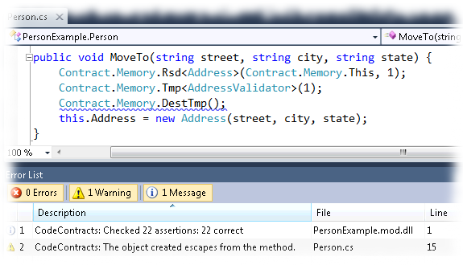
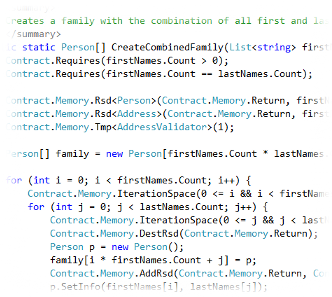
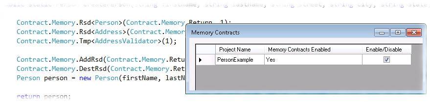

Resource Contracts for .NET is an extension of Code Contracts enabling the specification and verification of resources usage constraints.
The first release focuses on dynamic memory consumption, including new annotaions aiming at specifying memory usage contracts in a per-method basis along with lifetime properties. These annotations can be both statically verified in a modular fashion or checked in run-time.
The tool is available as a Visual Studio extension and provides in the IDE facilities such as autocompletion, inline documentation and verification at build time. Learn how to start using the tool at the Installation and usage section.
This project was selected as one of the recipients of the Software Engineering Innovation Foundation Awards.
This report describes how our tool works.
News
Version 1.3: added support for Code Contracts 1.4.40314.1 released on March 16th, 2011.
Our tool has been accepted as short paper in TOPI 2011: Developing Tools as Plug-ins workshop, that will be held during ICSE 2011.
Screenshots


